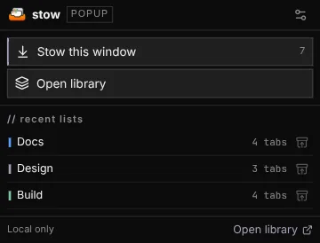
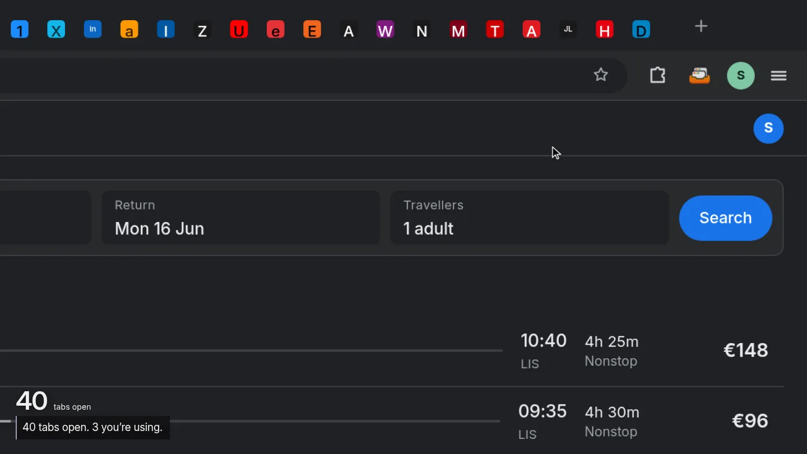

Save every tab in the window.
Every eligible tab is saved into Stow as one list, and the window closes. Pinned tabs stay exactly where you put them.
AltShiftS save window AltShiftT save this tab

Free · private tab manager
Forty tabs open, three you're actually using. Stow is a browser extension that saves your whole window as one searchable list, closes the tabs, and brings back any page when you need it.
No account No cloud No tracking
Free Open source Also on Firefox Works offline

Serve this page over HTTP to play the live demo — Chrome blocks modules from
file://.
How it works
Put the window away, search for the page when you need it, and never scroll a tab strip looking for something you saved.
Every eligible tab is saved into Stow as one list, and the window closes. Pinned tabs stay exactly where you put them.
AltShiftS save window AltShiftT save this tab

All the tabs you save live in Stow, searchable by title, URL, domain, or list name. The index stays in your browser, so results appear as you type.
AltShiftL open the library

Restore a single tab, a selection, or an entire list to the current window or a new one. Remove it from Stow afterward if you like.
Enter restore the selected tab

Features
Saving, searching, and restoring are above. These are the six things that keep a library trustworthy after the first week.
Organize
Rename it, pin it to the top, lock it so a restore won't empty it, or collapse it and move on. Your structure survives restarts and updates.
Tab groups
If you already group tabs by project, Stow keeps each group as its own list and recreates the groups when you restore. Turn it off to fold everything into one list.
Undo
Closing a tab in the library moves it to Trash, not out of existence. Every action is also reversible from the undo control.
Import / export
Import a OneTab list, bookmarks HTML, or Markdown. Export everything as a JSON file whenever you want a copy you own.
Exceptions
Name the sites Stow must leave alone, keep pinned tabs where they are, and decide whether private windows count.
Keyboard
The library is built to be driven from the keyboard, from the first capture to the final restore.
Questions
What people ask before trusting an extension with a full window of open pages.
Yes. Stow is a browser extension for Chrome 120+ and Firefox 140+, and it works offline. It adds no account, no cloud sync, and no analytics to your browser.
Press Alt Shift S, or open the Stow popup and save the window. Stow stores every eligible tab as one list, then closes those tabs; pinned tabs stay open. Chrome's own Ctrl Shift D bookmarks every tab but leaves them open and running.
Tab groups organize tabs that are still open. Stow closes them: each list lives in the library, survives restarts, and restores a single tab, a selection, or the whole list.
No. Lists stay in your browser's own storage. There is no Stow server, so export a JSON backup and move the file yourself if you want the lists elsewhere.
Uninstalling the extension removes its storage, including every saved list. Export a JSON backup before you uninstall if you want to keep them.
Yes. Stow imports OneTab exports, bookmarks HTML, Markdown lists, and its own JSON backups, so an existing shelf can move over in one step.
Privacy
Stow keeps your library inside your browser. There is no Stow account, no cloud sync, and no analytics. The table of what it stores is the whole story.
There is nothing to sign up for. Install Stow, save a window, and your library is there.
Lists live in your browser's own storage, not on a Stow server. Backups are files you choose to export.
No analytics, no telemetry. The extension contains no network code, so there is nothing to send.
Stow does not sync between devices, and that is the price of keeping everything local. Moving to another computer? Export a JSON backup and import it there.
Nothing in this table leaves your browser.
| Data | Where it is stored | Sent to Stow servers |
|---|---|---|
| Saved tabs and lists | Browser extension storage (IndexedDB) | No |
| Preferences | Browser-local storage | No |
| Optional backup files | A download location you choose | No |
| Favicons | Your browser's local favicon cache | No |
Uninstalling Stow removes its library. Export a JSON backup first if you want a copy.
Install Stow, save the window, and the tabs come back whenever you want them. Free, open source, and it works offline.
No account No cloud No tracking